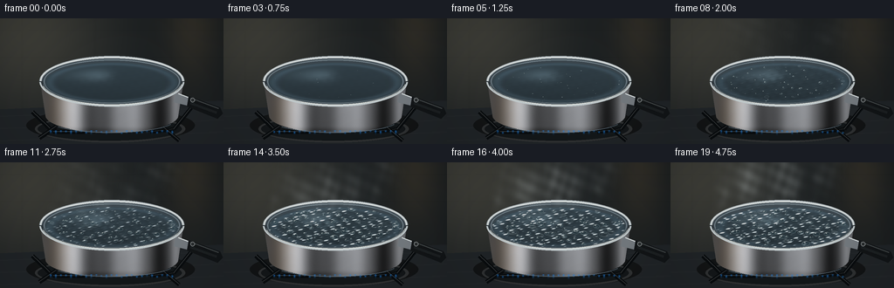
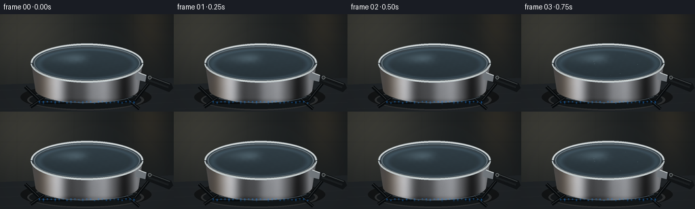

CODING AGENTS AS PIXEL WORLD MODELS
traex/GPT-6.1-Sol · phygen_106
点击播放 · 原生 RGB 像素
逐轮保存的候选
回放视频、检查图与代码变化。
每份候选均可单独播放。实际图片检查记录在下方工具轨迹中。
候选 01播放与检查图
点击播放 · 原生 RGB 像素


展开代码变化
--- 上一保存版本
+++ 本次保存版本
@@ -0,0 +1,212 @@
+from pathlib import Path
+import numpy as np
+from PIL import Image, ImageDraw, ImageFilter
+from artifact_io import save
+
+# A purely procedural, supersampled tabletop shot of water coming to a boil.
+ROOT = Path(__file__).resolve().parent
+W,H,S = 256,144,3
+WW,HH=W*S,H*S
+Y,X=np.mgrid[0:HH,0:WW].astype(float)/S
+rng=np.random.default_rng(41)
+
+def mask_polygon(points):
+ im=Image.new('L',(WW,HH)); ImageDraw.Draw(im).polygon([(round(x*S),round(y*S)) for x,y in points],fill=255)
+ return np.array(im)/255.
+
+def blend(base,col,alpha):
+ a=np.asarray(alpha)
+ if a.ndim==2: a=a[...,None]
+ return base*(1-a)+np.asarray(col)*a
+
+def ellipse(draw,bb,fill=None,outline=None,width=1):
+ draw.ellipse(tuple(round(v*S) for v in bb),fill=fill,outline=outline,width=max(1,round(width*S)))
+
+def line(draw,pts,fill,width=1):
+ draw.line([(round(x*S),round(y*S)) for x,y in pts],fill=fill,width=max(1,round(width*S)))
+
+# Defocused kitchen: cool dark tiles, a warm reflection from the window at left.
+base=np.zeros((HH,WW,3),float)
+base[:]=[26,30,32]
+base+=np.exp(-((X-30)/94)**2-((Y-12)/100)**2)[...,None]*np.array([36,32,24])
+base+=np.exp(-((X-220)/30)**2-((Y-8)/65)**2)[...,None]*np.array([21,15,7])
+for y in [14,45]:
+ base-=np.exp(-((Y-y)/.5)**2)[...,None]*3
+for x in [25,109,196]:
+ base-=np.exp(-((X-x)/.7)**2)[...,None]*2
+base+=rng.normal(0,.45,(HH,WW,1))
+bg=Image.fromarray(np.uint8(np.clip(base,0,255))).filter(ImageFilter.GaussianBlur(1.2*S))
+d=ImageDraw.Draw(bg)
+# The stove and its soft contact shadow.
+d.polygon([(0,104*S),(WW,94*S),(WW,HH),(0,HH)],fill=(32,36,39))
+for yy in [112,126,140]:
+ line(d,[(0,yy),(256,yy-10)],(40,43,45),.6)
+ellipse(d,(30,103,223,142),(18,20,21))
+ellipse(d,(40,111,212,142),(47,49,50))
+ellipse(d,(43,113,208,140),(19,23,25))
+for pts in [[(37,107),(61,130),(97,130)],[(172,130),(199,127),(220,101)],[(45,137),(64,124)],[(187,125),(205,140)]]:
+ line(d,pts,(9,12,14),5)
+ line(d,[(x,y-.8) for x,y in pts],(57,60,61),.7)
+base=np.array(bg).astype(float)
+
+# Steel pot body. Front cylinder is broad, with a rolled lip and gently rounded base.
+cx,cy,rx,ry=128,72,82,28
+th=np.linspace(0,np.pi,220)
+bodypts=[(cx-rx,cy),(cx+rx,cy)]
+bodypts += [(cx+76*np.cos(a),111+20*np.sin(a)) for a in th]
+bodypts += [(cx-rx,cy)]
+bodymask=mask_polygon(bodypts)
+u=(X-cx)/rx
+shade=69 + 105*np.exp(-((u+.55)/.16)**2) + 66*np.exp(-((u-.25)/.30)**2) + 51*np.exp(-((u-.9)/.08)**2)
+shade-=41*np.exp(-((u-.64)/.12)**2)
+shade+=9*np.sin(u*7)+4*np.sin(u*24)
+shade*=.88+.12*np.cos((Y-102)/35)
+shade-=18*np.exp(-((Y-128)/3)**2)
+# Fine horizontal brushing on the stainless steel.
+brush=1.2*np.sin(Y*19)+.9*np.sin(Y*31+X*.025)+rng.normal(0,.45,(HH,WW))
+metal=np.stack([shade*1.02+brush,shade*1.035+brush,shade*1.065+brush],axis=-1)
+metal+=np.exp(-((X-66)/17)**2)[...,None]*np.array([15,7,-2])
+base=blend(base,np.clip(metal,0,245),bodymask)
+
+# Fixed handle, with the attachment hidden behind the pot.
+im=Image.fromarray(np.uint8(np.clip(base,0,255)))
+d=ImageDraw.Draw(im)
+d.polygon([(201*S,86*S),(220*S,91*S),(219*S,101*S),(199*S,96*S)],fill=(116,122,127))
+line(d,[(204,86),(220,92)],(214,220,221),1.2)
+d.polygon([(216*S,89*S),(252*S,102*S),(255*S,109*S),(249*S,115*S),(214*S,101*S)],fill=(18,21,23))
+line(d,[(218,91),(250,103)],(63,68,69),1.4)
+line(d,[(218,97),(248,108)],(28,32,34),3)
+ellipse(d,(218,91,223,96),(42,46,47), (143,148,149),.55)
+# Pot opening: polished outer rim, interior wall, water will overlay this.
+ellipse(d,(45,43,211,101),(157,166,171))
+ellipse(d,(46,44,210,99),None,(225,230,228),1.25)
+ellipse(d,(48,46,208,98),(59,70,77))
+ellipse(d,(50,47,206,97),None,(109,123,131),1.2)
+# The upper far inside wall is dim steel, a narrow arc above the waterline.
+base=np.array(im).astype(float)
+
+# Coherent bubbles assigned fixed nucleation sites, with independent growth/pop cycles.
+bubbles=[]
+for k in range(94):
+ r=np.sqrt(rng.uniform(0,.90)); theta=rng.uniform(0,2*np.pi)
+ bx=cx+76*r*np.cos(theta); by=74+23*r*np.sin(theta)
+ bubbles.append((bx,by,rng.uniform(0,1),rng.uniform(.48,1.25),rng.uniform(1.1,4.8),rng.uniform(0,.6)))
+# Secondary vapor noise coordinates and packets are fixed for temporal consistency.
+steam=[]
+for k in range(42):
+ steam.append((rng.uniform(64,193),rng.uniform(0,1),rng.uniform(.45,1.1),rng.uniform(5,14),rng.uniform(0,6.28)))
+
+frames=[]
+for fi in range(20):
+ t=fi/4
+ p=fi/19
+ strength=np.clip((p-.17)/.60,0,1)
+ strength=strength*strength*(3-2*strength)
+ frame=base.copy()
+ # Blue gas tongues visible in the little gap underneath the pan.
+ flame=np.zeros((HH,WW),float)
+ for k in range(25):
+ xx=58+k*5.8
+ fy=131.0+1.1*np.sin(k*1.9)
+ hei=3.6+1.7*np.sin(k*1.7+t*7)
+ flame += np.exp(-((X-xx)/1.05)**2-((Y-(fy-hei/2))/(hei/2))**2)
+ flame*=((Y>128)&(Y<136))*.65
+ frame=blend(frame,[33,127,220],np.clip(flame,0,.75))
+ # Liquid is a horizontal ellipse, with a barely declining level from evaporation.
+ wy=73.5 + .9*p
+ wrx,wry=76.8,23.0
+ ex=(X-cx)/wrx; ey=(Y-wy)/wry
+ er=ex**2+ey**2
+ watermask=np.clip((1-er)*S*16,0,1)
+ # Smooth initial reflections yield to moving wavelets and refracted highlights.
+ wave = np.zeros((HH,WW),float)
+ dx = np.zeros_like(wave); dy=np.zeros_like(wave)
+ for j,(kx,ky,ph) in enumerate([(0.36,0.93,0),(0.78,-1.02,1.2),(.99,.41,2.7),(.21,1.8,4.2),(.72,2.3,3.1)]):
+ a=(.075+.52*strength)/(1+j*.3)
+ arg=(X*kx+Y*ky)*(.5+j*.13)+ph+t*(2.5+j*.7)
+ wave+=a*np.sin(arg)
+ dx+=a*kx*np.cos(arg); dy+=a*ky*np.cos(arg)
+ shade=52+14*(1-ey)*.5+4*wave
+ # Window reflected in water, fragmented by ripples rather than a opaque solid patch.
+ reflect=np.exp(-((X-(95+5*wave))/31)**4)*np.exp(-((Y-(65+2.0*wave))/7)**2)
+ bright=reflect*(23+14*np.sin(X*.065))
+ gleam=(np.clip(dx*.45-dy*.9+.16,0,1.4)**5)*strength*31
+ wcol=np.stack([shade*.76+bright*.84+gleam,shade*.97+bright+gleam,shade*1.09+bright*1.07+gleam],axis=-1)
+ # Soft inner-wall reflection around the edges.
+ edge=np.exp(-((np.sqrt(er)-.93)/.07)**2)
+ wcol+=edge[...,None]*np.array([13,17,20])
+ frame=blend(frame,np.clip(wcol,0,220),watermask)
+ # Bubbles below the surface appear first; progressively larger bubbles burst above it.
+ surface=Image.fromarray(np.uint8(np.clip(frame,0,255))).convert('RGBA')
+ layer=Image.new('RGBA',(WW,HH)); dd=ImageDraw.Draw(layer)
+ for k,(bx,by,phase,speed,rmax,threshold) in enumerate(bubbles):
+ onset=.12+threshold*.63
+ if p<onset: continue
+ local=np.clip((p-onset)/.27,0,1)
+ age=(t*speed+phase)%1
+ rad=(.45+rmax*strength)*np.sqrt(age+.03)*(.45+.55*local)
+ # Bubble caps grow into smooth convex lenses and rupture into concentric wavelets.
+ bx2=bx+.65*np.sin(t*3+phase*20)*strength
+ by2=by+.33*np.cos(t*4+phase*10)*strength
+ if age<.76:
+ yy=by2-rad*.14
+ bb=(bx2-rad,yy-rad*.57,bx2+rad,yy+rad*.57)
+ ellipse(dd,bb,(42,63,72,85),(131,153,158,int(90+65*local)),.35)
+ ellipse(dd,(bx2-rad*.7,yy-rad*.40,bx2+rad*.72,yy+rad*.27),None,(33,49,55,135),.3)
+ # Crescent highlight, with a small intense glint on the upper left.
+ dd.arc(tuple(round(v*S) for v in bb),195,284,fill=(221,229,225,int(120+95*strength)),width=max(1,int(S*.48)))
+ ellipse(dd,(bx2-rad*.57,yy-rad*.38,bx2-rad*.12,yy-rad*.19),(229,235,230,175))
+ else:
+ rr=rad*(1+(age-.76)*4)
+ ellipse(dd,(bx2-rr,by2-rr*.43,bx2+rr,by2+rr*.43),None,(166,184,185,int(135*(1-age)/.24)),.45)
+ if strength>.65:
+ ellipse(dd,(bx2-rr*.65,by2-rr*.28,bx2+rr*.65,by2+rr*.28),None,(200,209,205,int(100*(1-age)/.24)),.3)
+ # Composite all liquid features through the interior ellipse, never onto the pot itself.
+ la=np.array(layer).astype(float)
+ aa=la[:,:,3]/255*watermask
+ frame=blend(frame,la[:,:,:3],aa)
+ surface=Image.fromarray(np.uint8(np.clip(frame,0,255)))
+ dd=ImageDraw.Draw(surface)
+ # Reapply the near side rolled rim to occlude the liquid edge naturally.
+ dd.arc((45*S,43*S,211*S,101*S),0,180,fill=(44,51,56),width=4*S)
+ dd.arc((45*S,43*S,211*S,101*S),2,178,fill=(194,203,205),width=2*S)
+ dd.arc((47*S,44*S,209*S,99*S),8,167,fill=(238,240,233),width=max(1,round(.65*S)))
+ dd.arc((48*S,45*S,208*S,98*S),12,171,fill=(99,113,121),width=max(1,round(.65*S)))
+ # Tiny reflected flames in the lower curve of the polished vessel.
+ dd.arc((53*S,99*S,202*S,131*S),24,145,fill=(92,106,117),width=max(1,round(.5*S)))
+ frame=np.array(surface).astype(float)
+ # Translucent steam: drifting overlapping anisotropic puffs with turbulent edges.
+ steamamount=np.clip((p-.28)/.60,0,1)
+ vapor=np.zeros((HH,WW))
+ for k,(sx,phase,speed,sigma,ph) in enumerate(steam):
+ age=(t*.22*speed+phase)%1
+ # Fade in/out at the waterline and top, avoids popping.
+ fade=np.sin(np.pi*age)**1.1
+ sy=71-age*88
+ sx2=sx+9*np.sin(age*5+ph)+9*age*np.sin(ph)
+ sig=sigma*(.48+age*.85)
+ puff=np.exp(-((X-sx2)/sig)**2-((Y-sy)/(sig*1.5))**2)
+ turbulence=.68+.15*np.sin(X*.43+Y*.13-t*1.8+ph)+.17*np.sin(X*.18-Y*.39+t*2.1)
+ vapor+=puff*fade*turbulence*.092
+ vapor*=steamamount
+ # Wisp density is less over the foreground steel, more against the dark background.
+ vapor*=np.clip((86-Y)/13,0,1)
+ frame=blend(frame,[201,209,209],np.clip(vapor,0,.49))
+ # A few short lived droplets hover close to the surface during full rolling boil.
+ if strength>.72:
+ im=Image.fromarray(np.uint8(np.clip(frame,0,255)))
+ dd=ImageDraw.Draw(im)
+ for k in range(5):
+ life=(t*1.2+k*.231)%1
+ if life<.48:
+ xx=80+k*22+3*np.sin(k*9)
+ yy=72+6*np.sin(k*4)-8*np.sin(np.pi*life/.48)
+ ellipse(dd,(xx-.4,yy-.7,xx+.4,yy+.5),(171,188,191))
+ frame=np.array(im)
+ # Filmic vignetting and antialiasing at output resolution.
+ vig=1-.13*((X-128)/166)**2-.09*((Y-78)/108)**2
+ frame=np.clip(frame*vig[...,None],0,255).astype(np.uint8)
+ final=Image.fromarray(frame).resize((W,H),Image.Resampling.LANCZOS)
+ frames.append(np.asarray(final))
+save(np.stack(frames),ROOT)
+print('Saved 20 RGB frames at 256Ã144 / 4 fps.')
可观测工具轨迹
实际执行的命令与返回图片。
命令 1exit 0
/bin/bash -lc 'ls -la && cat prompt.txt && cat GENERATION_RULES.md && cat task_spec.json'
命令 2exit 0
/bin/bash -lc "cat artifact_io.py && python - <<'PY'
import numpy, PIL
print('numpy/PIL ready')
PY"命令 3exit 0
/bin/bash -lc "cat > generate.py <<'PY'
from pathlib import Path
import numpy as np
from PIL import Image, ImageDraw, ImageFilter
from artifact_io import save
# A purely procedural, supersampled tabletop shot of water coming to a boil.
ROOT = Path(__file__).resolve().parent
W,H,S = 256,144,3
WW,HH=W*S,H*S
Y,X=np.mgrid[0:HH,0:WW].astype(float)/S
rng=np.random.default_rng(41)
def mask_polygon(points):
im=Image.new('L',(WW,HH)); ImageDraw.Draw(im).polygon([(round(x*S),round(y*S)) for x,y in points],fill=255)
return np.array(im)/255.
def blend(base,col,alpha):
a=np.asarray(alpha)
if a.ndim==2: a=a[...,None]
return base*(1-a)+np.asarray(col)*a
def ellipse(draw,bb,fill=None,outline=None,width=1):
draw.ellipse(tuple(round(v*S) for v in bb),fill=fill,outline=outline,width=max(1,round(width*S)))
def line(draw,pts,fill,width=1):
draw.line([(round(x*S),round(y*S)) for x,y in pts],fill=fill,width=max(1,round(width*S)))
# Defocused kitchen: cool dark tiles, a warm reflection from the window at left.
base=np.zeros((HH,WW,3),float)
base[:]=[26,30,32]
base+=np.exp(-((X-30)/94)**2-((Y-12)/100)**2)[...,None]*np.array([36,32,24])
base+=np.exp(-((X-220)/30)**2-((Y-8)/65)**2)[...,None]*np.array([21,15,7])
for y in [14,45]:
base-=np.exp(-((Y-y)/.5)**2)[...,None]*3
for x in [25,109,196]:
base-=np.exp(-((X-x)/.7)**2)[...,None]*2
base+=rng.normal(0,.45,(HH,WW,1))
bg=Image.fromarray(np.uint8(np.clip(base,0,255))).filter(ImageFilter.GaussianBlur(1.2*S))
d=ImageDraw.Draw(bg)
# The stove and its soft contact shadow.
d.polygon([(0,104*S),(WW,94*S),(WW,HH),(0,HH)],fill=(32,36,39))
for yy in [112,126,140]:
line(d,[(0,yy),(256,yy-10)],(40,43,45),.6)
ellipse(d,(30,103,223,142),(18,20,21))
ellipse(d,(40,111,212,142),(47,49,50))
ellipse(d,(43,113,208,140),(19,23,25))
for pts in [[(37,107),(61,130),(97,130)],[(172,130),(199,127),(220,101)],[(45,137),(64,124)],[(187,125),(205,140)]]:
line(d,pts,(9,12,14),5)
line(d,[(x,y-.8) for x,y in pts],(57,60,61),.7)
base=np.array(bg).astype(float)
# Steel pot body. Front cylinder is broad, with a rolled lip and gently rounded base.
cx,cy,rx,ry=128,72,82,28
th=np.linspace(0,np.pi,220)
bodypts=[(cx-rx,cy),(cx+rx,cy)]
bodypts += [(cx+76*np.cos(a),111+20*np.sin(a)) for a in th]
bodypts += [(cx-rx,cy)]
bodymask=mask_polygon(bodypts)
u=(X-cx)/rx
shade=69 + 105*np.exp(-((u+.55)/.16)**2) + 66*np.exp(-((u-.25)/.30)**2) + 51*np.exp(-((u-.9)/.08)**2)
shade-=41*np.exp(-((u-.64)/.12)**2)
shade+=9*np.sin(u*7)+4*np.sin(u*24)
shade*=.88+.12*np.cos((Y-102)/35)
shade-=18*np.exp(-((Y-128)/3)**2)
# Fine horizontal brushing on the stainless steel.
brush=1.2*np.sin(Y*19)+.9*np.sin(Y*31+X*.025)+rng.normal(0,.45,(HH,WW))
metal=np.stack([shade*1.02+brush,shade*1.035+brush,shade*1.065+brush],axis=-1)
metal+=np.exp(-((X-66)/17)**2)[...,None]*np.array([15,7,-2])
base=blend(base,np.clip(metal,0,245),bodymask)
# Fixed handle, with the attachment hidden behind the pot.
im=Image.fromarray(np.uint8(np.clip(base,0,255)))
d=ImageDraw.Draw(im)
d.polygon([(201*S,86*S),(220*S,91*S),(219*S,101*S),(199*S,96*S)],fill=(116,122,127))
line(d,[(204,86),(220,92)],(214,220,221),1.2)
d.polygon([(216*S,89*S),(252*S,102*S),(255*S,109*S),(249*S,115*S),(214*S,101*S)],fill=(18,21,23))
line(d,[(218,91),(250,103)],(63,68,69),1.4)
line(d,[(218,97),(248,108)],(28,32,34),3)
ellipse(d,(218,91,223,96),(42,46,47), (143,148,149),.55)
# Pot opening: polished outer rim, interior wall, water will overlay this.
ellipse(d,(45,43,211,101),(157,166,171))
ellipse(d,(46,44,210,99),None,(225,230,228),1.25)
ellipse(d,(48,46,208,98),(59,70,77))
ellipse(d,(50,47,206,97),None,(109,123,131),1.2)
# The upper far inside wall is dim steel, a narrow arc above the waterline.
base=np.array(im).astype(float)
# Coherent bubbles assigned fixed nucleation sites, with independent growth/pop cycles.
bubbles=[]
for k in range(94):
r=np.sqrt(rng.uniform(0,.90)); theta=rng.uniform(0,2*np.pi)
bx=cx+76*r*np.cos(theta); by=74+23*r*np.sin(theta)
bubbles.append((bx,by,rng.uniform(0,1),rng.uniform(.48,1.25),rng.uniform(1.1,4.8),rng.uniform(0,.6)))
# Secondary vapor noise coordinates and packets are fixed for temporal consistency.
steam=[]
for k in range(42):
steam.append((rng.uniform(64,193),rng.uniform(0,1),rng.uniform(.45,1.1),rng.uniform(5,14),rng.uniform(0,6.28)))
frames=[]
for fi in range(20):
t=fi/4
p=fi/19
strength=np.clip((p-.17)/.60,0,1)
strength=strength*strength*(3-2*strength)
frame=base.copy()
# Blue gas tongues visible in the little gap underneath the pan.
flame=np.zeros((HH,WW),float)
for k in range(25):
xx=58+k*5.8
fy=131.0+1.1*np.sin(k*1.9)
hei=3.6+1.7*np.sin(k*1.7+t*7)
flame += np.exp(-((X-xx)/1.05)**2-((Y-(fy-hei/2))/(hei/2))**2)
flame*=((Y>128)&(Y<136))*.65
frame=blend(frame,[33,127,220],np.clip(flame,0,.75))
# Liquid is a horizontal ellipse, with a barely declining level from evaporation.
wy=73.5 + .9*p
wrx,wry=76.8,23.0
ex=(X-cx)/wrx; ey=(Y-wy)/wry
er=ex**2+ey**2
watermask=np.clip((1-er)*S*16,0,1)
# Smooth initial reflections yield to moving wavelets and refracted highlights.
wave = np.zeros((HH,WW),float)
dx = np.zeros_like(wave); dy=np.zeros_like(wave)
for j,(kx,ky,ph) in enumerate([(0.36,0.93,0),(0.78,-1.02,1.2),(.99,.41,2.7),(.21,1.8,4.2),(.72,2.3,3.1)]):
a=(.075+.52*strength)/(1+j*.3)
arg=(X*kx+Y*ky)*(.5+j*.13)+ph+t*(2.5+j*.7)
wave+=a*np.sin(arg)
dx+=a*kx*np.cos(arg); dy+=a*ky*np.cos(arg)
shade=52+14*(1-ey)*.5+4*wave
# Window reflected in water, fragmented by ripples rather than a opaque solid patch.
reflect=np.exp(-((X-(95+5*wave))/31)**4)*np.exp(-((Y-(65+2.0*wave))/7)**2)
bright=reflect*(23+14*np.sin(X*.065))
gleam=(np.clip(dx*.45-dy*.9+.16,0,1.4)**5)*strength*31
wcol=np.stack([shade*.76+bright*.84+gleam,shade*.97+bright+gleam,shade*1.09+bright*1.07+gleam],axis=-1)
# Soft inner-wall reflection around the edges.
edge=np.exp(-((np.sqrt(er)-.93)/.07)**2)
wcol+=edge[...,None]*np.array([13,17,20])
frame=blend(frame,np.clip(wcol,0,220),watermask)
# Bubbles below the surface appear first; progressively larger bubbles burst above it.
surface=Image.fromarray(np.uint8(np.clip(frame,0,255))).convert('RGBA')
layer=Image.new('RGBA',(WW,HH)); dd=ImageDraw.Draw(layer)
for k,(bx,by,phase,speed,rmax,threshold) in enumerate(bubbles):
onset=.12+threshold*.63
if p<onset: continue
local=np.clip((p-onset)/.27,0,1)
age=(t*speed+phase)%1
rad=(.45+rmax*strength)*np.sqrt(age+.03)*(.45+.55*local)
# Bubble caps grow into smooth convex lenses and rupture into concentric wavelets.
bx2=bx+.65*np.sin(t*3+phase*20)*strength
by2=by+.33*np.cos(t*4+phase*10)*strength
if age<.76:
yy=by2-rad*.14
bb=(bx2-rad,yy-rad*.57,bx2+rad,yy+rad*.57)
ellipse(dd,bb,(42,63,72,85),(131,153,158,int(90+65*local)),.35)
ellipse(dd,(bx2-rad*.7,yy-rad*.40,bx2+rad*.72,yy+rad*.27),None,(33,49,55,135),.3)
# Crescent highlight, with a small intense glint on the upper left.
dd.arc(tuple(round(v*S) for v in bb),195,284,fill=(221,229,225,int(120+95*strength)),width=max(1,int(S*.48)))
ellipse(dd,(bx2-rad*.57,yy-rad*.38,bx2-rad*.12,yy-rad*.19),(229,235,230,175))
else:
rr=rad*(1+(age-.76)*4)
ellipse(dd,(bx2-rr,by2-rr*.43,bx2+rr,by2+rr*.43),None,(166,184,185,int(135*(1-age)/.24)),.45)
if strength>.65:
ellipse(dd,(bx2-rr*.65,by2-rr*.28,bx2+rr*.65,by2+rr*.28),None,(200,209,205,int(100*(1-age)/.24)),.3)
# Composite all liquid features through the interior ellipse, never onto the pot itself.
la=np.array(layer).astype(float)
aa=la[:,:,3]/255*watermask
frame=blend(frame,la[:,:,:3],aa)
surface=Image.fromarray(np.uint8(np.clip(frame,0,255)))
dd=ImageDraw.Draw(surface)
# Reapply the near side rolled rim to occlude the liquid edge naturally.
dd.arc((45*S,43*S,211*S,101*S),0,180,fill=(44,51,56),width=4*S)
dd.arc((45*S,43*S,211*S,101*S),2,178,fill=(194,203,205),width=2*S)
dd.arc((47*S,44*S,209*S,99*S),8,167,fill=(238,240,233),width=max(1,round(.65*S)))
dd.arc((48*S,45*S,208*S,98*S),12,171,fill=(99,113,121),width=max(1,round(.65*S)))
# Tiny reflected flames in the lower curve of the polished vessel.
dd.arc((53*S,99*S,202*S,131*S),24,145,fill=(92,106,117),width=max(1,round(.5*S)))
frame=np.array(surface).astype(float)
# Translucent steam: drifting overlapping anisotropic puffs with turbulent edges.
steamamount=np.clip((p-.28)/.60,0,1)
vapor=np.zeros((HH,WW))
for k,(sx,phase,speed,sigma,ph) in enumerate(steam):
age=(t*.22*speed+phase)%1
# Fade in/out at the waterline and top, avoids popping.
fade=np.sin(np.pi*age)**1.1
sy=71-age*88
sx2=sx+9*np.sin(age*5+ph)+9*age*np.sin(ph)
sig=sigma*(.48+age*.85)
puff=np.exp(-((X-sx2)/sig)**2-((Y-sy)/(sig*1.5))**2)
turbulence=.68+.15*np.sin(X*.43+Y*.13-t*1.8+ph)+.17*np.sin(X*.18-Y*.39+t*2.1)
vapor+=puff*fade*turbulence*.092
vapor*=steamamount
# Wisp density is less over the foreground steel, more against the dark background.
vapor*=np.clip((86-Y)/13,0,1)
frame=blend(frame,[201,209,209],np.clip(vapor,0,.49))
# A few short lived droplets hover close to the surface during full rolling boil.
if strength>.72:
im=Image.fromarray(np.uint8(np.clip(frame,0,255)))
dd=ImageDraw.Draw(im)
for k in range(5):
life=(t*1.2+k*.231)%1
if life<.48:
xx=80+k*22+3*np.sin(k*9)
yy=72+6*np.sin(k*4)-8*np.sin(np.pi*life/.48)
ellipse(dd,(xx-.4,yy-.7,xx+.4,yy+.5),(171,188,191))
frame=np.array(im)
# Filmic vignetting and antialiasing at output resolution.
vig=1-.13*((X-128)/166)**2-.09*((Y-78)/108)**2
frame=np.clip(frame*vig[...,None],0,255).astype(np.uint8)
final=Image.fromarray(frame).resize((W,H),Image.Resampling.LANCZOS)
frames.append(np.asarray(final))
save(np.stack(frames),ROOT)
print('Saved 20 RGB frames at 256Ã144 / 4 fps.')
PY
python generate.py"命令 4exit 0
/bin/bash -lc "python - <<'PY'
from pathlib import Path
import numpy as np
from PIL import Image
p=Path('.')
a=np.load(p/'pixels.npz')['pixels']
assert a.shape==(144,256,20)
f=sorted((p/'frames').glob('*.png'))
assert len(f)==20
assert all(Image.open(x).size==(256,144) and Image.open(x).mode=='RGB' for x in f)
for x in ['generate.py','pixels.npz','index.html','inspection.png','transition_check.png']:
print(x,(p/x).stat().st_size,'bytes')
print('Output validated.')
PY"命令 5exit 0
/bin/bash -lc 'if command -v ffmpeg >/dev/null 2>&1; then ffmpeg -loglevel error -y -framerate 4 -i frames/%02d.png -c:v libx264 -crf 17 -pix_fmt yuv420p -movflags +faststart video.mp4 && ls -lh video.mp4; fi'
保存候选 1 份；完成命令 5 次；可验证图片返回 0 张。原始 API 响应与完整日志保留在本地。